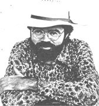

Selected doin's of well-known MOTHER-types from around the world.
EDWARD ABBEY
In 15 published books, Edward Abbey has shown himself to be a novelist, essayist, eco-raider, desert rat, fire lookout, exalter of the wilderness, and eloquent self-proclaimed defender of the American West. Saving the world, however, is just one of his hobbies.
Abbey's new book, Down the River, is an exhilarating collection of essays - mostly about the agonies and raptures of river rafting - wrapped around a few good stories and some zesty polemics.
A true autochthonic - that is, sprung from the earth - patriot (as he describes one of his own characters), Abbey swears allegiance only to the land he knows . . . the spare, rough, wild, undeveloped, and unbroken slickrock/canyon/desert he's lived in most of his adult life. "I was an environmentalist, an ecologist, before I ever heard the terms," he says.
The writer favors low productivity and a contracting economy. "Growth for the sake of growth [is the] ideology of the cancer cell," Edward says. He also favors tax, policies that encourage negative population growth: "A population of 100 million might make the U.S. livable again."
Perhaps most of all, Abbey is opposed to what developers and their political friends call the "humanization" of the West. It's natural, he emphasizes, for the desert to be "not inhuman but nonhuman".
Edward Abbey's best-selling work, The Monkey Wrench Gang, is about four likable heroes - not protagonists ... heroes - who make "eco-raids" upon industrial tourism and commercial development. This book, which many consider to be Abbey's finest novel, is obviously based on his own handson experience. In fact, the author considers himself an agrarian anarchist, an agitator, an extremist. "Human society," he has said, "is like a stew . . . if you don't keep it stirred up, you get a lot of scum on top." - Morton Kamins.
GARRISON KEILLOR
Anyone who remembers the Great Depression - or has parents who do - surely knows about the Golden Age of Radio . . . a period back in the 1930's and 40's when entire families would gather to enjoy a medium that inspired, entertained, and transported folks beyond the limits of their day-to-day lives. Well, today - in 1982 - some two million listeners across the country tune in their sets to hear a Minnesota Public Radio program reminiscent of that bygone era.
For two hours every Saturday evening, Garrison Keillor entertains Americans with A Prairie Home Companion. The show - a combination of folk music and storytelling - is the cumulative result of Mr. Keillor's admiration for radio and his talents as a writer. Born in Anoka, Minnesota - a small town about 30 miles north of the Twin Cities - Keillor worked as a magazine writer covering The Grand Old Opry's radio program before conceiving his own downhome format.
Garrison performs his show live before an audience of 900 at the World Theater in St. Paul, Minnesota. His narrations of the news from Lake Wobegon, Minnesota - a tiny town (pop. 500) of Keillor's own creation "where all the women are strong, all the men are goodlooking, and the children are above average . . . every one of them" - makes up about a third of A Prairie Home Companion. The rest of the program is devoted to an astonishing variety of jazz and folksy music from around the world.
Lake Wobegon ("the town that time forgot and the decades cannot improve") reminds us of a simpler and slower-moving past. The community's inhabitants are sturdy midwesterners who shop at Ralph's Pretty Good Grocery ("If you can't find it at Ralph's, you can probably get along without it") . . . listen to Father Emil's sermons at the Church of Our Lady of Perpetual Responsibility, or those of Pastor Engqvist at Lake Wobegon Lutheran ... keep their hard-earned money at Bob's Bank (motto: "Neither a borrower nor a lender be") . . . and - many of them - work at the Powdermilk Biscuit factory, whose products help "shy people get up and do what needs to be done".
Keillor's tales of this enviable little town are told with a combination of whimsy and sorrow, and - while they poke fun at the oddities of Americana - the stories also pay homage to a lifestyle that embraces health, commitment, and faith . . . in a world that sometimes seems to have lost those ideals. - Anne Welsbacher.
EDITOR'S NOTE: Listeners of A Prairie Home Companion might be interested in Garrison Keillor's first book, Happy to Be Here , a collection of 27 pieces that first appeared in The New Yorker . The hardback volume is available from libraries or bookstores, or can be ordered for $11.95 plus $1.25 shipping and handling from Atheneum Publishers, Dept. TMEN, 597 Fifth Avenue, New York, New York 10017.
BARBARA BEL GEDDES
Though currently better known in her public life as Miss Ellie, the genteel Southern matriarch of the Ewing clan on the television series Dallas, Barbara Bel Geddes's private life revolves around wooded acreage and wildlife.
When the filming of her Los Angeles-based TV series is over, Barbara retreats to her personal haven ... a 200+-year-old white clapboard farmhouse on 55 forested acres in upstate New York.
One of the reasons she cherishes the rural solitude of the farm is that the isolation allows her to be near many of nature's creatures. And in recognition of her love for animals, Ms. Bel Geddes was named the 1982 honorary chairperson of Lifeline for Wildlife, Inc., a nonprofit organization that rescues injured and orphaned animals in New York state. The staff of Lifeline heals raccoons, muskrats, foxes, snapping turtles, deer, opossums, and squirrels . . . then returns them to their natural habitat.
Lifeline for Wildlife is the brainchild of Barbara's daughter, Betsy Lewis. Under Betsy's direction (and with the help of her mom) the organization has grown until it now serves up to 300 animals in two facilities and maintains a fully equipped animal hospital plus a 10-acre outdoor "outpatient" compound in Ellenville, New York. - CK.
IN BRIEF...
Congressman JIM WEAVER, an Oregon Democrat (see Newsworthies, issue 75), has introduced legislation that would allocate $14.5 million - over a five-year period - to the establishment of pilot project research centers, across the U.S., to provide farmers with information on the benefits of farming organically .... Former astronaut NEIL ARMSTRONG - in a rare public appearance - advised graduating students at the University of Cincinnati to learn "the elegance of simplicity". The first man to walk on the moon now strolls around his farm near the small town of Lebanon, Ohio .... Former President JIMMY CARTER is promoting the formulation of a Public Affairs Institute to be associated with Emory University in Atlanta. Mr. Carter hopes to attract world leaders to forums on topics such as the environment, human rights, and nuclear arms reduction .... French journalist LOUIS GONZALES-MATA has begun an investigation into the results of 25 years of nuclear bomb testing in France's Mururoa Atoll in the South Pacific, following his discovery that scores of Polynesians - brought in by military aircraft - are hospitalized in Paris. More than half of those patients suffer from brain cancer, and many were between the ages of 15 and 20 during the atmospheric nuclear explosions of 1966-1974. - CK.
|
 |
|
|